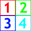
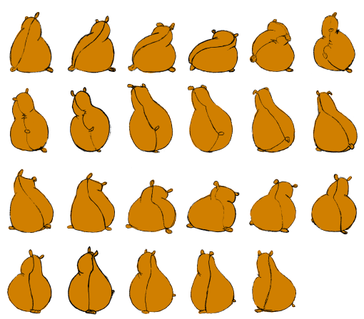
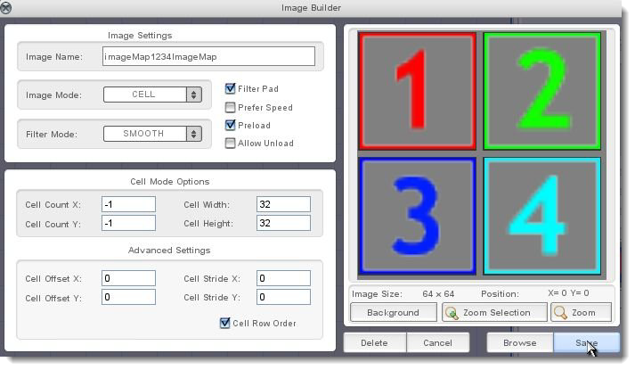
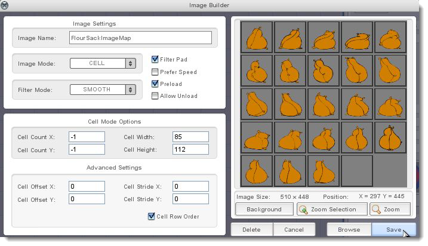
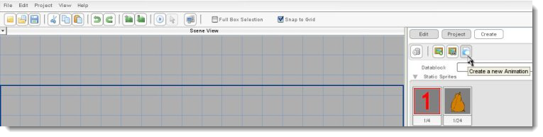
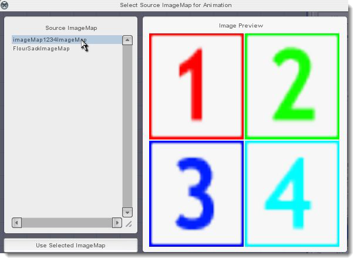
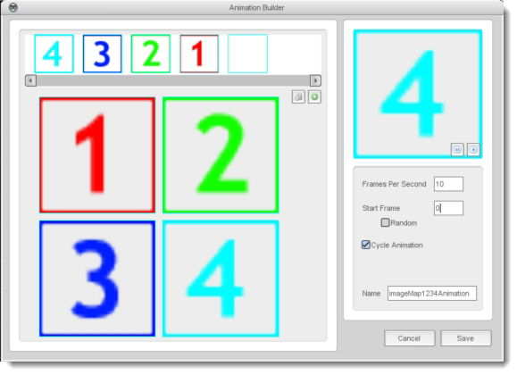
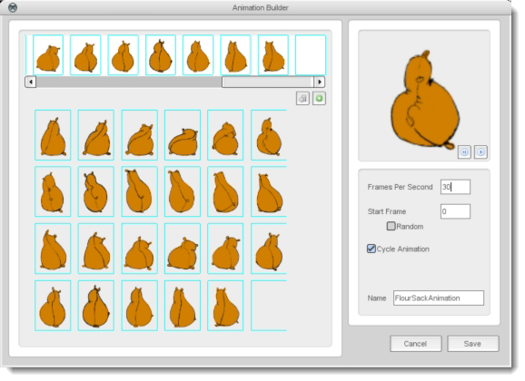
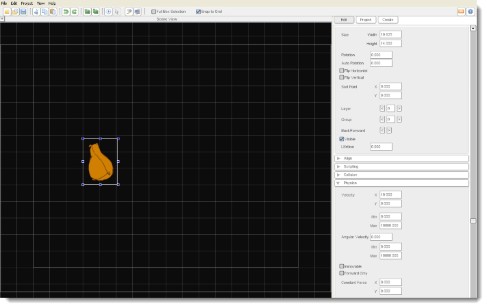

Introduction
In this tutorial, you'll learn how to set up and use animated sprites
in Torque 2D. An 'animated sprite' is a two-dimensional image that has
multiple frames, like a movie. This tutorial will focus on Torque 2D features
that are unique to animated sprites. In addition to these features,
animated sprites can be manipulated in many of the same ways as static
(non-animated) sprites, which you can learn about in the Static Sprite
Tutorial.
To prepare for this tutorial, run Torque 2D and create a new
project. Name the new project "AnimatedSprites" and use the Empty Game project template. This
creates a new project called AnimatedSprites in the location you
chose to save it to.
Loading The Image Files
We'll need to add a couple of images to the AnimatedSprites project for
this tutorial. To do this we will learn a convenient way to
bring images into Torque 2D. Simply drag Figure 1 and Figure 2 from
this html document into your Torque 2D window with your new project
loaded.


This should bring them into your object library, though as full
images.These images are "CELL" images, so double click their icons
in the object library and set them up according to the following instructions.
In the Image Builder dialog, change the Image Mode to CELL (as shown in
Figure 3). CELL mode is used for images that are evenly divided into
multiple frames. The default is four equally-sized frames, which is
correct for this image, so press Save.

Now it's time to adjust the FlourSack image. Double click on the
FlourSack imageMap. Choose CELL image mode. The frames don't look quite
right, so we're going to adjust the cell sizes. For starters, change the
Cell Width to "85" and press Enter.
That looks like the right width. Let's assume that the cells are as tall
as they are wide and change the Cell Height to "85" also. The result
does not look perfect. Enter "112" instead (as shown in Figure 4). It
should look a lot better. Click Save.

Creating A New Animation

Your sprites now appear in the Static Sprites section. To set them up
for the Animated Sprites section, we will use the Animation Builder. To
do this, click the Create a new Animation button under the Create tab
(as shown in Figure 5). In the Select Material dialog, select
imageMap1234ImageMap then press the Select button (as shown in
Figure 6).

This brings up the Animation Builder, with its default settings
selected. The biggest area of the Animation editor (center/lower left)
you can see all the available cells of the image map, which are used as
frames in your animation.
On the top is the Animation Storyboard where you can arrange these
cells. On the right side in the upper right you can see a preview
animation window, below that are various options and a save and cancel
button.
The Animation Builder
Now it's time to take a closer look at the Animation Builder
features. Let's take a look at the animation properties ...
- Frames Per Second: Number of frames you want played each
second (speed of the animation).
- Start Frame: This is the frame you want the animation to
start at.
- Total Time: The number of seconds in one cycle of the
animation. The frame times will be divided evenly, so, in this
animation, 4 frames in one second will result in .25 seconds per frame.
- Cycle Animation: If checked itmakes the
animation start back at the beginning after completing its
cycle.If this isn't checked it means the animation will play
once, then stop on the final frame.
- Name: The name of the animation.
The Animation Storyboard
To create your own animation drag your animation frames from the
Source ImageMap section into the Animation Storyboard (or just click the
green plus to add all of the frames). Let's make this one run
backwards...

Start by dragging the "4" image into the first frame in the storyboard.
Now continue dropping frames in... "3"... "2"... "1".You should
see the preview, in the top right, playing your animation as you build
it.Be sure to modify the Frame Per Second field if your animation
is going to fast.
The FlourSack Animation
Let's do one more animation as an example... one that's a little
cooler than flashing numbers. Back in the Create tab, click on Create a
new Animation and select FlourSackImageMap as the source
image.Click on the green plus (Add all the frames from the image)
button to add all of your frames. Hey, that looks pretty cool! But what
is that flash at the end of the animation?

Go back to the storyboard and scroll down to the end. You'll see that
there is an empty frame there . This is because when you import your
image using the Image Mode Cell, it divides the image into equal frames
per row based on the frame size you specify.
Since this animation has an odd number of frames, when the Image Map
Builder created it, there was a blank one at the end. Drag the last frame off of
the animation list and drop it on the trash can icon to remove it from the
animation, then preview it again. Now that looks really
good! Return to the storyboard and save the animation using the default
name.
Back in the Scene Editor, drag the animated flour sack from the Create
tab onto the left side of the Scene View. With that animated sprite
still selected, click the Edit tab on the right side of the screen and
open up the Physics section in that tab. Type "10" into the Velocity X
property and press Enter.
Save your level, then press the Play Level button. You should see the
sack walking across the screen.

In Conclusion
We've thoroughly explored the setup of animated sprites in Torque 2D. To
further your understanding, it will be worth your while to go through
the Image Maps tutorial. That will explain how to create the celled
image maps that are used to make these frame-based sprites.
Now that you have the tools, the possibilities for cool and interesting
animations are pretty much limitless! Have fun with it!
|